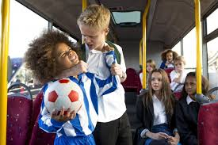
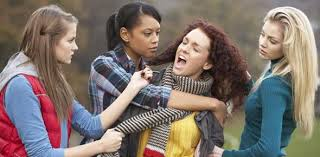

A form of aggression that we have all been exposed to at one point or another in our lives; bullying has been around for decades. I have been noticing that some adults don't really understand why there is a need for anti-bullying programs in schools. I often hear " boys will be boys" and "girls are catty". I also hear " they will work it out and tomorrow they will be best friends". I wish it was that simple and that overnight things would magically work themselves out. Yet, that is the issue - the lack of understanding around bullying. Over the past 20 years, bullying has evolved into a much bigger problem and it is prevalent in most schools. We often overlook it or fear using the word bullying because the media has stigmatized it as a vicious word that strips away the behavior and magnifies the issue into a problem that we don't want to address. Here are the facts: bullying happens regardless, and it is time to understand why the problem is larger and more dangerous than two decades ago.

20 years ago, bullying was seen as a dyadic relationship between a bully and a victim and the bullying happened face-to-face. For example, one of the bigger kids on the playground would typically harass the smaller kid. The behavior happened at recess or after school: the bully would terrorize the victim while teachers and parents were absent. The type of bullying was seen as verbal and physical harassment. Once the bully got caught there would be repercussions for his/her actions.
20 years ago, we all knew who the bully was and how to avoid him/her. It was the bigger, scarier kid that terrorized everyone else. I remember my bully; she was twice my size, mean and would pick on me. One day, I stood up to her and told her to cut it out. It took all of my courage and I was trembling at the thought of what she could possibly do to me; it turned out that she was misunderstood and needed a friend. Once I confronted her, the behavior stopped. The moral to this story is not that I was a hero, but at that time most bullies would stop the behavior once someone stood up to them.
Bullying was also seen as a part of childhood and regardless of how painful it might have been, we can all recall being bullied at one point. Also 20 years ago, we all had a safe place to go to escape the bully. The behavior only happened when we encountered the bully and once we made it home from school we were relieved that we survived yet another day at school. Do we remember the famous sentence: "Sticks and stones will break my bones but words will never hurt me..." It was really never true but it was something my parents would tell me to help me deal with bullies. That was 20 years ago…

10 years ago, bullying started to become more of a group dynamic. Do we all remember the movie Mean Girls? When Lindsay Lohan was targeted by the Queen Bee and wanted to be part of the popular group. That is the perfect movie to explain how 10 years ago bullying began to from into a power struggle between groups of people. Bullies were no longer outcasts, but could now even be the most popular kid at school. Roles started to evolve when bullies had sidekicks to help them terrorize a victim. Since it was more of a social dynamic, it was harder to tell an adult. Students feared that it would be social suicide to stand up to the bully. Bullying started to evolve into gossip, rumors, blackmail, and exclusion. Bullying was again seen as part of growing up but it was harsher than ever. Some students were scared from their experiences and it impacted them long into adulthood.
Certain students were easily targeted, more than others, because they were “different”. Those, “different,” students would be constantly victimized and harassed. Eventually the behavior ceased as they graduated high school or the bully and his/her clan moved onto someone else. We all knew it was happening but we didn't really know how to address it. Do we remember hearing or giving this advice: " Just ignore it or walk away". " If the bully knows it is hurting you then he/she will continue. Pretend it does not bother you." That advice sometimes worked and other times it backfired. But at that point in time it was all we had. We were looking to preserve some dignity and escape the harassment. Therefore, if I could somehow block it out or ignore it...the bullying would eventually stop. That was 10 years ago…
Today, bullying is seen as this stigmatized overused word that no one wants to address. It can happen to anyone, at anytime. With the increase in technology, Internet accessibility, and lack of supervision, kids are exposed to more channels to bully and to be bullied. Now, bullying no longer just happens at school. It can happen online, via text message, IM, pictures, and social media. It can happen all of a sudden and escalate so fast that your head spins. It is happening more and more but we seem to be seeing it less and less. That is because of the evolution into cyberbullying and relational aggression: Forms of bullying that are more difficult to address.
In other words, it happens less face-to-face and more behind the scenes. Also, there is a rise in retaliating and revenge between students so it becomes more difficult to identify the victim and the bully. As an educator, you might get caught in the cross fire of a bullying situation and you can't seem to figure out who started what. Bullying is now more complex and happens frequently.
*Source: http://www.chicagonow.com/bully-boot-camp/2013/02/the-evolution-of-bullying/